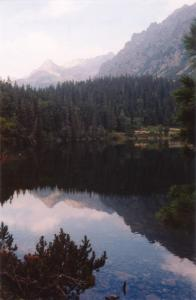
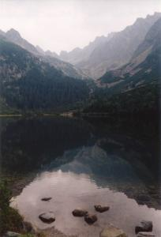

|
|
 |
|
|
|
|
czas przejścia
odcinka:
(wariant a)
1:00
czas
powrotu
odcinkiem:
(wariant a)
0:50
|
|
Do Popradzkiego Stawu (Popradské pleso) możemy dojść trzema wariantami.
Polecam osobiście na dojście wariant a, jako najszybszy i najłatwiejszy, a na powrót b,
jako najładniejszy pod kątem widoków; zaś dla nie lubiących tłoku,
ceniących spokój i ciszę najlepszy będzie wariant c.
|
|

czas przejścia odcinka:
1:00
czas powrotu odcinkiem:
0:50
|
a. od przystanku elektriczki/parkingu Popradské pleso - drogą asfaltową
Wysiadłszy z elektriczki na wysokości 1245m idziemy asfaltową, szeroką
i równą drogą równo pod górę (w kilku miejscach jedynie robi się stromiej).
Najpierw mijamy tory, potem szlaban i budynki ujęcia wody, oraz mostek na
stosunkowo niewielkim tutaj Popradzie, który zaczyna się kilkaset metrów dalej,
w miejscu gdzie na wysokości 1302m łączą się potok Krupa, wypływający z Popradzkiego Stawu,
i Potok Mięguszowiecki (Hincov Potok), biorący początek w Hińczowym Stawie.
Ponad kilometr od mostka, na wyskości ok. 1400m przechodzimy przez drugi, juz na potoku
Krupa, po czym szosa zwija się serpentyną w dwa głębokie zakręty. (Nie ścinamy
ich, postępujemy za znakowanym szlakiem!!!) Stąd ponad drzewami otwiera się widok na
Dolinę Mięguszowiecką, ograniczającą ją Grań Baszt i wspaniałe skały, na które pną się
odważnie drzewa. Można tu odpocząć, przysiadając na ławeczkach.
Za nami już ponad połowa drogi: wkrótce szosa staje się całkiem płaska,
wychodzimy na bardziej odsłoniętą przestrzeń, więc nie zasłaniane
przez drzewa oczom naszym ukazują się góry: po prawej wspaniała, pionowa
ściana Osterwy (Ostrva) - na której wypatrzeć można taterników, szczyty wokół
Doliny Mięguszowieckej, koronkową grań podwieszonej bajecznie nad nami
Doliny Złomisk. Stąd do Stawu i schroniska już tylko kilkaset metrów.
Wariant: Na 10 minut przed Popradzkim Stawem od naszej asfaltówki odchodzi w prawo
żółty szlak na Symboliczny Cmentarz Ofiar Tatr, niesamowicie piękne i
dające do myślenia miejsce. Jeżeli planujemy wracać tą samą drogą, warto jednak zostawić
sobie zwiedzenie go na powrót, jeśli wystarczy nam sił i czasu. Można będzie zwiedzić go również
gdy na powrót wybierzemy wariant b lub c.
 |
Potok Krupa w Dolinie Mięguszowieckiej, widziany z niebieskiego szlaku
fot. Pacyfka
powiększenie zdjęcia |
|
|

czas przejścia odcinka:
1:20
czas powrotu odcinkiem:
1:10
|
b. Ze Szczyrbskiego Jeziora Magistralą
Strzałki, kierujące na szlak, znajdziemy w pobliżu Jeziora
(po wyjściu ze stacji elektriczki/autobusów na wprost).
Po parunastu minutach szlak przechodzi mostem nad potokiem Młynica, opuszcza asfalt i wchodzi w las.
Droga jest szeroka i wygodna, równo wspina się pod górę. Otaczają ją wspaniałe, potężne świerki,
nastroszone brodami szarych porostów. Po półgodzinie
na wysokości 1499m mijamy drogowskaz - w prawo, w dół, odchodzi zielony szlak - wariant c.
Idziemy dalej szlakiem czerwonym - zbudowanym z dużych kamieni,
zupełnie poziomym, trawersującym zbocze doliny. Wkrótce drzewa - ogromne świerki, limby i modrzewie -
odsłonią nam widoki na leżące dużo niżej dno Doliny Mięguszowieckiej,
na położone po jej drugiej stronie Osterwę, Tępą i Wysoką. Najbardziej
niesamowite i powalające wrażenie robi zawieszona nad Doliną Mięguszowiecką
Dolina Złomisk i postrzępiona grań otaczających ją szczytów i przełęczy.
Szlak, wiodąc między kosodrzewiną, nieco się obniża, przekracza Potok Mięguszowiecki
(Hincov Potok) - z mostka można wypatrzyć pstrągi w krystalicznej wodzie - i dochodzi do asfaltówki
tuż przed Stawem i Schroniskiem.
|
|

czas przejścia odcinka:
1:30
czas powrotu odcinkiem:
1:20
|
c. od Szczyrbskiego Jeziora pół godziny Magistralą, po czym 45 minut zielonym szlakiem
Strzałki, kierujące na szlak, znajdziemy w pobliżu Jeziora
(po wyjściu ze stacji elektriczki/autobusów na wprost).
Po parunastu minutach szlak przechodzi mostem nad potokiem Młynica, opuszcza asfalt i wchodzi w las.
Droga jest szeroka i wygodna, równo wspina się pod górę. Otaczają ją wspaniałe, potężne świerki,
nastroszone brodami szarych porostów. Po półgodzinie
na wysokości 1499m osiągamy drogowskaz - w prawo, w dół, odchodzi nasz zielony szlak.
Wygodną, choć ukośną ścieżką obniżamy się na dno doliny dzikim, przepięknym lasem
- otaczają nas wspaniałe, potęne drzewa, limby i świerki. Następnie szlak
wiedzie wzdłuż Mięguszowieckiego Potoku (Hincov potok), który paręset metrów
dalej w dół łączy się z potokiem Krupa wypływającym z Popradzkiego Stawu, dając początek
wielkiej rzece Poprad, największemu z dopływów Dunajca.
Wkrótce szlak przekracza potok i zaczyna podchodzić ukośnie pod górę, aż dojdzie do
szosy. Stąd do schroniska już tylko kilkaset metrów. Możemy dojść tam
asfaltem bądź przeciąwszy go za zielonymi znakami zejść nad staw i jego brzegiem dotrzeć
do Chaty.
|
|
|
Popradzki Staw (Popradské pleso), otoczony limbami i świerkami, leży na wysokości
1494m. W jego zielonych wodach odbijają się ściany Osterwy. Hotel górski znany jako
Chata Popradské Pleso albo Chata Kapitana Morávku został nazwany tak na cześć
partyzanta walczącego w czasach drugiej wojny światowej. Budynek jest jednym
z ładnejszych schronisk w słowackich Tatrach. Polityka turystyczna wewnątrz
jest zmienna i różna każdego sezonu; w roku 1999 udostępniano tu podłogę
na poddaszu za 170 koron, co było najniższą ceną w Tatrach Wysokich; w następnym
roku zrezygnowano z tego w ogóle. Dla majętnych jest tu restauracja, bar, przed
budynkiem zaś stoły, ławki i budki handlujące wszelkim dobrem.
|
|
|
|  |  |  |
Popradzki Staw. Widać schronisko i szczyt Mięguszowieckiego Wołowca
fot. Pacyfka
powiększenie zdjęcia | Popradzki Staw i zawieszona nad nim Dolina Złomisk z przełęczą Żelazne Wrota
fot. Pacyfka
powiększenie zdjęcia | Orzechówka (Nucifraga caryocatactes) na stoliku przed schroniskiem prosi o okruszki
fot. Pacyfka
powiększenie zdjęcia |
|
|
|
czas przejścia
odcinka:
0:35
czas
powrotu
odcinkiem:
0:30
czas
łączny
od początku:
1:35
czas
powrotu
do początku:
1:20
|
|
Początek szlaku znajduje się u końca asfaltówki, dochodzącej tu od
przystanku kolejki. Z ustawionej tam tabliczki dowiadujemy się o zakazie
wprowadzania psów; złamawszy ów przepis raz lub dwa razy, zostajemy ukarani
grzywną, a za trzecim razem śmiercią przez powieszenie. ścieżka wiedzie
płaskim dnem doliny, pośród imponujących limb i wielkich kosodrzewin; możemy
oglądać wspaniałe korzenie tych roślin oplatające wielkie kamienie. ("kosodrzewiny
wężowiska poobszywały głaźne ławy" - Kasprowicz). Po lewej stronie doliny
podziwiamy imponujące skalne ściany, pożłobione ogromnymi żlebami, u podnóży
których leżą imponujące piarżyska z ustypanych głazów. To Grań Baszt (Bášty)
z najwyższym Szatanem. Dochodzimy do rozstaju dróg, gdzie w prawo odchodzi
szlak na Rysy, a w lewo na Hińczowe Stawy i Koprowy.
|
|
|
|
|
czas przejścia
odcinka:
1:00
czas
powrotu
odcinkiem:
0:45
czas
łączny
od początku:
2:35
czas
powrotu
do początku:
2:05
|
|
W pobliżu górnej granicy kosówki musimy przekroczyć potok po wielkich
głazach. Wchodzimy na kolejny próg doliny, więc ścieżka staje się stromsza;
nieco łagodzą to zakosy trawersujące zbocze. Nie ulegajmy pokusie ścinania
zakrętów, bo nie oszczędzi nam to ani czasu, ani wysiłku, a narazi na upadek
i skręcenie kończyn, a przede wszystkim rozdeptujemy przy tym niewinne
rośliny i niszczymy strukturę gleby, powodując powiększanie się tzw. erozji
turystycznej. Z tego miejsca można wypatrzyć po prawej stronie doliny szlak
do Chaty pod Rysami, i samo schronisko. Oglądając się zaś w tył możemy
podziwiać widok na wspaniałą, ogromną Dolinę Mięguszowiecką.
Osiągamy następny taras doliny. Jest tu płasko i zielono, a wkrótce
ukazują się naszym oczom najpierw małe stawki: po lewej stronie ścieżki
Šatanove Plieska, dalej po prawvej Hincove Oká
- są to , a finalnie ogromna płaszczyzna
największego w Słowackich Tatrach Wielkiego Stawu Hińczowego,
1944m npm. (Wg mapy VKÚ 20 ha powierzchni, 53m głębokości). Staw otoczony
jest przez potężne ściany Mięguszowieckich Szczytów, masyw Koprowego Wierchu,
a z drugiej strony otwiera się imponująca przestrzennością Dolina
Mięguszowiecka, otoczona z jednej strony pożlebioną ścianą Grani Baszt, z drugiej
- zboczami Osterwy. Na dnie doliny możemy podziwiać rysunek plam barwnych,
utworzonych przez różne rodzaje rozmieszczonej piętrowo górskiej roślinności.
|
|
Šatanove Pliesko. W wodzie odbija się Szatan i koronkowa krawędź Grani Baszt.
fot. Pacyfka
powiększenie zdjęcia |
|
Hińczowy Staw i wznoszące się nad nim Cubryna i Mięguszowieckie Szczyty.
fot. Luiza
powiększenie zdjęcia |
|
|
|
|
|
czas przejścia
odcinka:
0:40
czas
powrotu
odcinkiem:
0:30
czas
łączny
od początku:
3:15
czas
powrotu
do początku:
2:35
|
|
Po odpoczynku nad Hińczowym Stawem będziemy musieli pokonać 240 m deniwelacji,
dzielących nas od Koprowej Przełęczy.
Ścieżka odchodząca w lewo od stawu wśród traw i kwiatów
doprowadza nas pod stok (po drodze po lewej widzimy Mały
Staw Hińczowy, 1921m). Wspinamy się w górę stoku żmudnymi
zakosami. (Pamiętamy o nieskracaniu szlaku i nieścinaniu zakrętów!).
Tak dochodzimy do
Koprowej Przełęczy Wyżniej (Vyšné Kôprovské sedlo, 2180m). Na
przełęczy ścieżki rodzielają się: na wprost szlak sprowadza w dolinę Hlińską,
w prawo odchodzi czerwony szlak na Koprowy Wierch.
|
|
|
|
|
|
czas przejścia
odcinka:
0:30
czas
powrotu
odcinkiem:
0:20
czas
łączny
od początku:
3:45
czas
powrotu
do początku:
2:55
|
|
Nasza droga robi się coraz stromsza i kamienista, coraz mniej wkoło roślinności,
trzeba uważać na
leżące luzem kamienie i wypróbowywać ich stabilność, zanim przeniesiemy
na nie ciężar ciała. Szczególnie uważać trzeba przy schodzeniu - będziemy
bowiem do przełęczy schodzić tą samą drogą. Tuż przed szczytem robi się
już całkiem stromo.
Po prawej ręce mamy wspaniałe kopuły Mięguszowieckich
Szczytów, a na tle nieba można
dostrzec sylwetkę "chłopka" na pilnowanej przez niego
przełęczy, zanim wynurzą się przez nią Lodowy i Łomnica.
Wierzchołek Koprowego (Kôprovský štít, 2367m) jest dość ciasny
- w sezonie jest tu tłoczno.
|
Widok ze szczytu jest powalający! Koprowy leży na styku trzech dolin:
Mięguszowieckiej, Piarżystej (Temnosmrečinská dolina) i Hlińskiej. Widzimy
więc pod naszymi stopami ogromną płaszczyznę Hińczowego, Cubrynę, Mięguszowieckie
Szczyty, majestatyczną piramidę Wysokiej, Rysy, całą polską Orlą
Perć, od Świnicy przez Kozi po Krzyżne, widzimy jak na dłoni naprawdę tęczujące
Ciemnosmreczyńskie Stawy (1677 i 1724m) w dolinie Piarżystej, o których
pisał Kasprowicz:
W ciemnosmreczyńskich skał zwaliska,
Gdzie pawiookie drzemią stawy,
Krzak dzikiej róży pąs swój krwawy
Na plamy szarych złomów ciska.
Lewa strona Doliny Hlińskiej oraniczona jest przez mur Hrubego - wielką ścianę skalną,
o wystrzępionej grani, o pożlebionej powierzchni:
Hruby jest mózgiem skalnym. Widzisz ostre szwy
Natężone do bólu żłobistym skupieniem?
Ognie tędy lawiną zadymioną szły.
Ziemia stygła i kamień się stawał kamieniem.
(...)
Melodio niepojęta, ciszo wód i skał,
Która kruszysz się w uchu zaziemskim szelestem!
Czuję wiatr: niósł mnie w dymach, ponad ogniem siał
i rozwiał po istnieniu. Gdzie ja teraz jestem?
Pisałam w liście do Przyjaciela: W zasadzie nie jestem w stanie
określić, który widok jest najpiękniejszy - z Koprowego, z Małej Wysokiej
czy z Rysów. Gdy na któreś z nich wejdę, myślę "tak, to właśnie ten!" a
następnego dnia na innym: "nie, to tu jest najpiękniej!"
|
|
|
|
|
|
czas przejścia
odcinka:
5:00
czas
powrotu
odcinkiem:
5:15
czas
łączny
od początku:
8:45
czas
powrotu
do początku:
8:10
|
|
Zszedłszy ze szczytu na Przełęcz Koprową, możemy
iść dalej długą trasą przez dolinę Hlińską i Koprową
lub wrócić tą samą drogą, czyli przez Popradzki Staw:
Wariant - powrót tą samą trasą:
Przełęcz Koprowa - Hińczowy Staw - 30 min.,
Hińczowy Staw - Popradzki Staw - 1:15,
Popradzki Staw - Šťrbské Pleso - 1:10,
łącznie powrót 3 h,
łączna długość całej trasy (przy początkowym wariancie a) - 6:45
Schodząc w dolinę Hlińską zagłębiamy się w coraz bujniejszą roślinność:
początkowo trawy, zioła i kwiaty, potem coraz wyższe kosówki, jarzębiny,
limby i świerki. Rajskości tej malowniczej dolinie dodaje strumień, wzdłuż
którego schodzimy. Stopniowo ogarnia nas coraz wyższy, piękny i tajemniczy
las, przekraczamy mostki na potokach, w końcu, po dwóch godzinach
marszu od przełęczy, dochodzimy do rozejścia szlaków.
To już dolina Koprowa. Szeroką alejką, a potem asfaltem, idziemy pośród
wspaniałych świerków, wdłuż pięknego potoku. Po lewej wznosi się potężna,
majestatyczna piramida Krywania, po prawej ciągną się łagodne grzbiety
Liptowskich Kop. Droga jest bardzo łatwa, niemalże płaska, ale też bardzo
długa. Nieocenioną zaletą tego miejsca jest fakt, że nie jest ono zbyt
uczęszczane.
|
|
|
|
|
|
|
czas przejścia
odcinka:
0:45
czas
powrotu
odcinkiem:
0:45
czas
łączny
od początku:
9:30
czas
powrotu
do początku:
8:55
|
|
Dochodzimy do rozdroża z wiatką. Tu w prawo odgałęzia się zielony szlak do
Podbańskiego, a w lewo niebieski do Trzech Studniczek. Ten drugi szybciej doprowadzi
nas do szosy. Zagłębiamy się w las wąską ścieżką i rozleniwieni drogą przez
Koprową z bolesnym zaskoczeniem odkrywamy, że trzeba iść pod górę. Ścieżka
bowiem przekracza małe wzniesienie, musimy pokonać deniwelację ponad 150m.
Potem już schodzimy w dół - do szosy.
Uwaga! Autobusy SAD (odpowiednik naszego PKS) bardzo wcześnie kończą
kursowanie w tym rejonie, bywa że ostatni odchodzi około g.15-stej. (Kompleksowe
rozkłady jazdy z podanymi godzinami odjazdów ze wszystkich przystanków
znajdują się na każdym przystanku danej linii SAD. Zatem godziny odjazdów
z Trzech Studniczek możemy sprawdzić np. na przystanku w S�trbskim plesie). Jeżeli
nie mamy prywatnego środka transportu, pamiętajmy, aby zaplanować trasę
tak, by zdążyć, w przeciwnym wypadku czeka nas jeszcze siedmiokilometrowy
marsz asfaltem do Strbskiego Plesa. Awaryjnie możemy także skorzystać z
autostopu, który jest z reguły skuteczny.
"Jak uczyliśmy mamę intuicjonizmu" - moje autostopowe wspomnienia
|
|
|
|
|
|
| Copyright © www.xemantic.com 2003 |


{kind=link}
{kind=link}
{kind=link}
{kind=link}
{kind=link}
{kind=link}
{kind=link}
{kind=link}
{kind=link}
{kind=link}
{kind=link}
{kind=link}
{kind=link}
{kind=link}
{kind=link}
{kind=link}